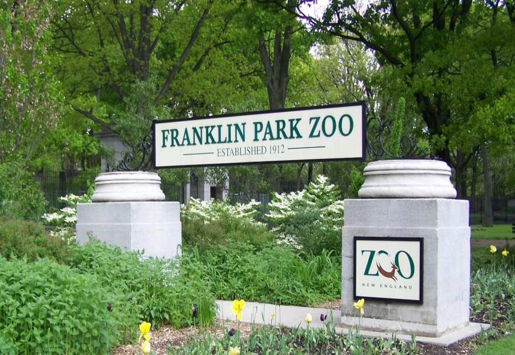

The Franklin Park Zoo is a 72 acres (290,000 m2) zoo located in Boston, Massachusetts. It is currently operated by Zoo New England, which also operates the Stone Zoo in Stoneham, Massachusetts. The zoo is located in the northeast portion of Franklin Park, Boston's largest park and the last component of the city's famed Emerald Necklace. The zoo was opened to the public in 1912, and managed by the City of Boston until 1958, when the Metropolitan District Commission (MDC) began management. Under the MDC's control, the zoo opened several new exhibits, including Bird's World, the Children's Zoo, and the African Tropical Forest. In 1991, the zoo's management was handed over to the Commonwealth Zoological Corporation (CZS), which also gained management of the Stone Zoo. In July 1997, the CZS was renamed Zoo New England to "reflect the changing image of both zoos". The zoo has been accredited by the Association of Zoos and Aquariums (AZA) since 1990.
